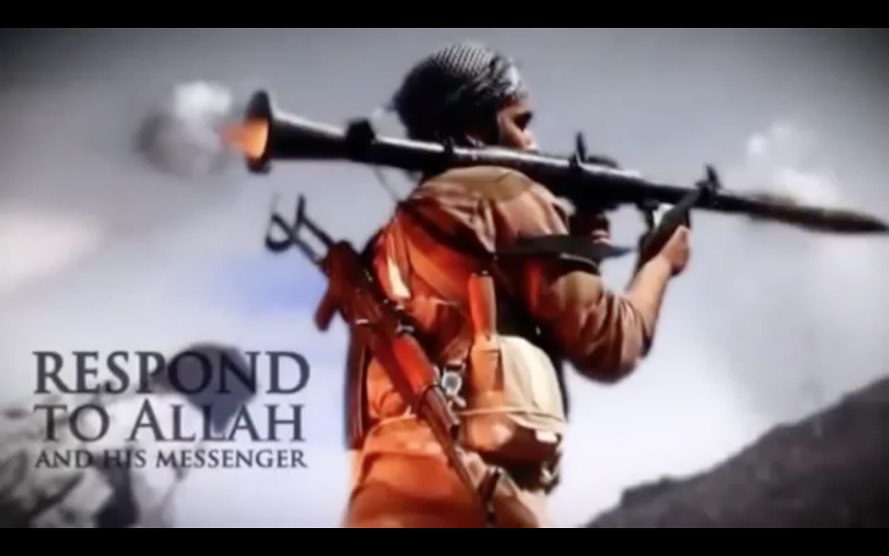

The history of the IS is very close to Al-Qaeda’s one. Being at first one of its branches, the IS took progressively distance with its parent organization for finally cutting all ties with it
(1). In fact, in February 2014, Al-Qaeda described the IS as being a brutal and intractable group. Therefore, in terms of strategy, the two groups have very different ways of proceeding: recreating a caliphate as being a pure islamic state was also Osama bin Laden’s greatest dream, but what Al-Qaeda was trying to build in years, the impatient IS wants to create in an instant. By proclaming the caliphate in June, the IS has been overshadowing Al-Qaeda and gathering a brand new jihadist generation who got spread out after the assassinate of Bin Laden and who were looking for a new spiritual home. (2) Engaged in an ethnic cleansing, the IS has been developping a strategy consisting in first: «purifying» the islamic state and second: expanding to the rest of the world. Unlike its predecessor who had different targets at the same time, the IS wants to show that it is following a clear goal, with a well-thought strategy that nobody can stop. Indeed, the division between Al-Qaeda and the IS can basically be compared to a conflict of generations: a dusty Al-Qaeda believing in a kind of «traditionnal» terrorism and a young dynamic IS breaking every rules. This generation gap finds its best illustration in the way the two groups have been settling their communication strategy and mainly their visual propaganda.
From the very first moments, islamist groups have been using visual propaganda in order to broadcast their convictions, to claim the ownership of an attack and above all, to get an international recognition. It is difficult to know when has been released the first islamist video, but what is sure is that its first main push happened with the 11th of September attacks in America. Bin Laden, as being Al-Qaeda’s leader at that time, released a few audio and rapidly video documents in which he claimed the paternity of the attacks. A video released on the 9th of November 2011 is considered as being the first Al-Qaeda’s video.
During about 9 minutes, the video is showing Bin Laden and a few of his «collegues» talking and laughing about the attacks. The quality of the video is pretty bad: shot in a square frame, the video displays on the bottom the date and time of the film in a 90’s style that was already a bit outdated in 2001.

The camera appears to be standing on a tripod and the only effects that are rythming the whole movie are a few zoom-in/zoom-out on the faces of the different protagonists. Putting this video out of its context (if possible), the film is not really different from a hand-made family movie that could be shot for any gathering event. It almost looks difficult to believe that those smiling men, quietly sitting on pillows, actually planned an attack that killed around 3000 persons. What can however catch consideration is the attention that has been put to attach english subtitles to the video; these
are the very beginnings of an internationalisation of the propaganda that the IS will later push to its extreme. Over the years, the «style» of Al-Qaeda’s videos has never really changed: most of the time they are being shot in a sort of minimalism, displaying one of the main leaders standing in front of a beige background, face to camera, making new declarations and threats. The IS’ videos are light years away from Al-Qaeda’s ones. It’s almost as if the IS looked at Al-Qaeda’s blured, dull camcorder sermons of a decade ago and concluded that extremist Islam really needed a fresh and energetic renewal. If the first IS’ video is sort of following the tradition of men standing face to the camera and making declarations, the whole setting around it completely changed. The video starts with photoshoped images of fighters, the backgrounds are now different exterior scenes,

the fighters pictures appear in a slow motion effect and type is hierarchised, directly included in the video. Far from Al-Qaeda’s english subtitles, the whole video is set in English, from the fighters declarations to the pieces of text accompanying the images.(3)
The evolution of style between the two groups is huge: unlike Al-Qaeda, the IS videos look like they are part of a much wider marketing strategy whose main target is the entire world. Every aspect of their visual propaganda seems to be controlled, with no space for amateuristic mistakes.